併購自動帶入、交易備註、外觀自訂
v3.3.0 把幾個過去需要使用者自己動手的繁瑣設定自動化或開放彈性： 併購歷史資料在雲端模式下會自動帶入、 交易紀錄可以加上備註、 外觀與交易顏色都能自訂。
1、併購功能再進化（雲端模式自動帶入）
過去手上持股若因併購而換股，需要自行輸入併購條件。 從 v3.3.0 開始，雲端模式預設會 自動帶入歷史併購資料（涵蓋 2009 年至今）。
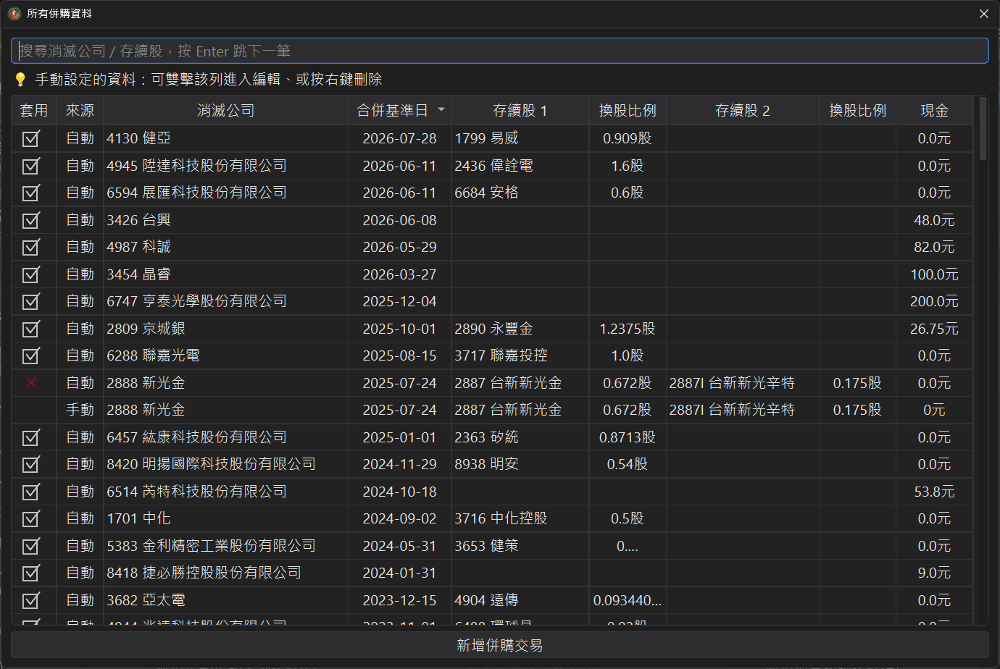
自動帶入後仍保留完整彈性，可以處理常見的各種併購情境：
● 自動帶入的併購資料可選擇取消套用：即使有自動帶入的併購資料，使用者依然可選擇不要套用。
● 自動帶入後仍可手動覆寫：若覺得自動帶入的併購資料不正確，可自行手動輸入，系統會以手動輸入為主。
● 多家公司合而為一：例如 3514 昱晶與3561 昇陽光電合併為 3576 聯合再生。
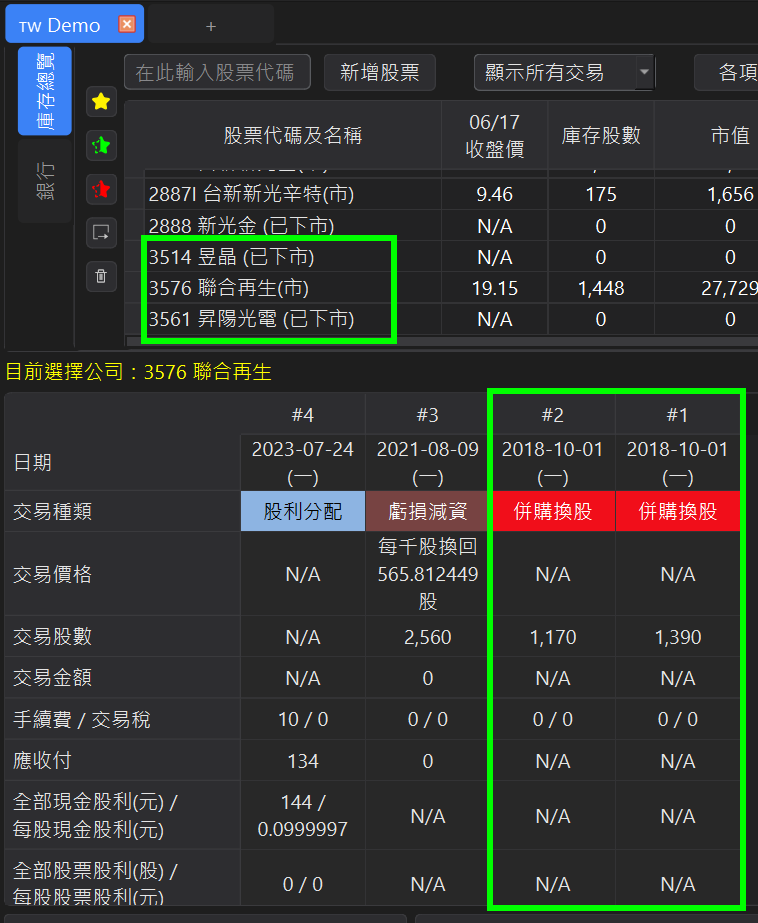
● 連續併購串接：例如 2456 奇力新先併購 3068 美磊科技，之後 2327 國巨* 又併購 2456 奇力新。
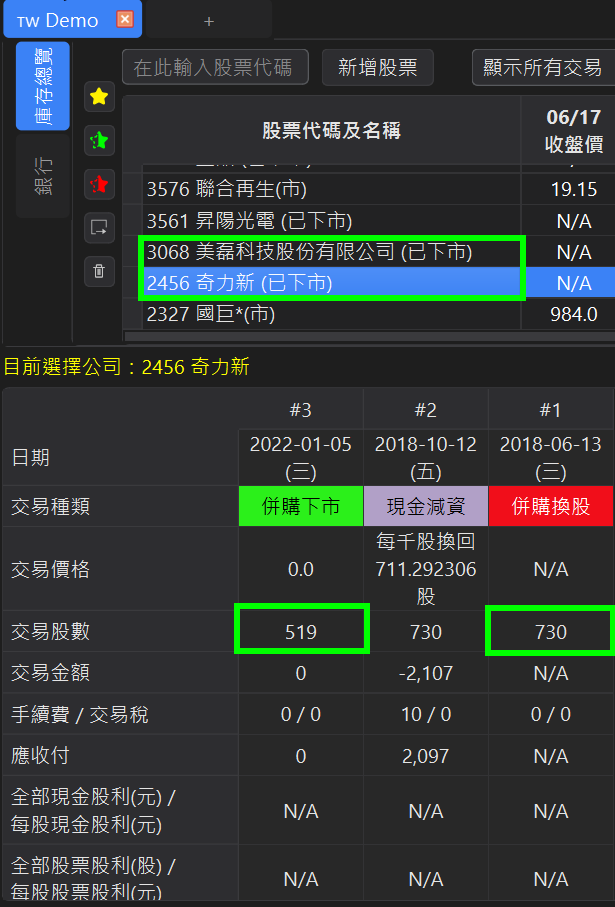
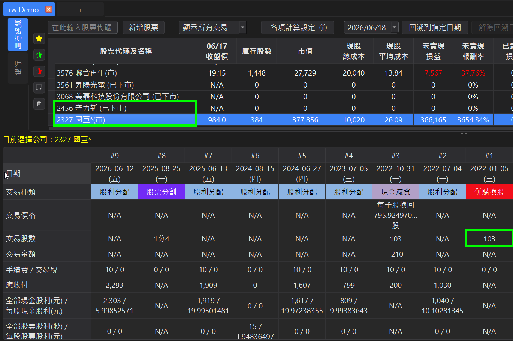
● 控股公司轉型：有些公司只是單純轉型為控股公司，但股票代碼有更換，也會自動處理。例如 6251 定穎 轉為 3715 定穎投控。
● Hover 提示：滑鼠移到「併購換股」或「併購下市」欄位上時，會顯示是從哪支股票轉換而來、或要轉換到哪支股票。
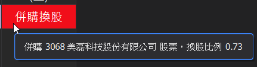
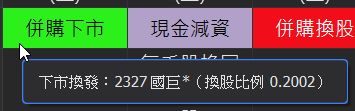
提醒：這些併購資料為開發者從相關新聞整理取得,若發現錯誤,歡迎回報。
2、交易紀錄可加入備註
各式交易紀錄只要是使用者自行輸入的（非自動帶入的股利等資料），都可以加上備註。 有備註的欄位會顯示圖示方便辨認, 滑鼠移到欄位上會直接顯示備註內容。
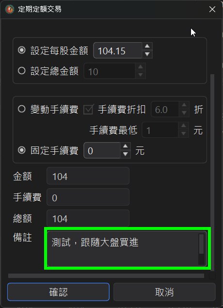
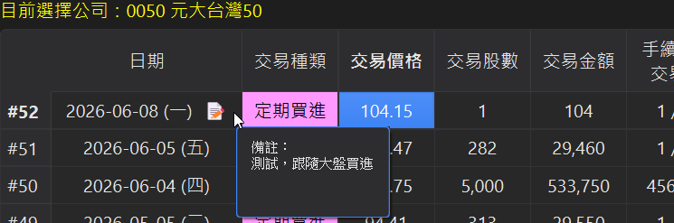
3、自訂外觀與交易種類顏色
v3.3.0 起，可以將外觀切換為較具現代感的版面； 若覺得不習慣，也可以隨時切回傳統版面。
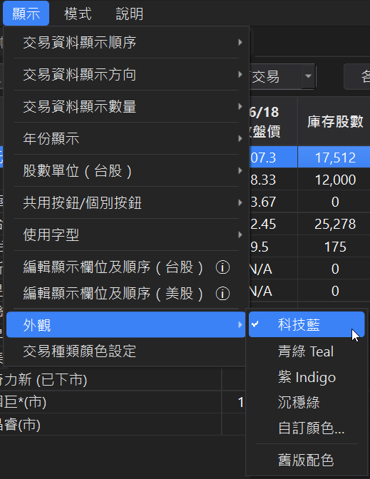
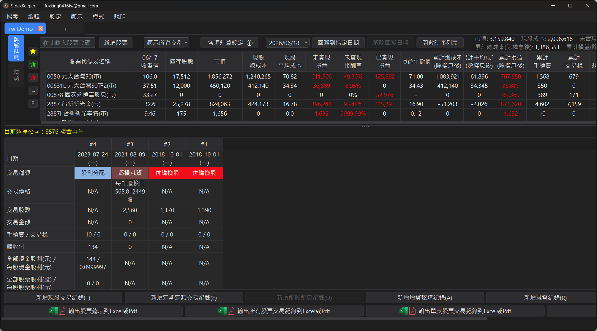
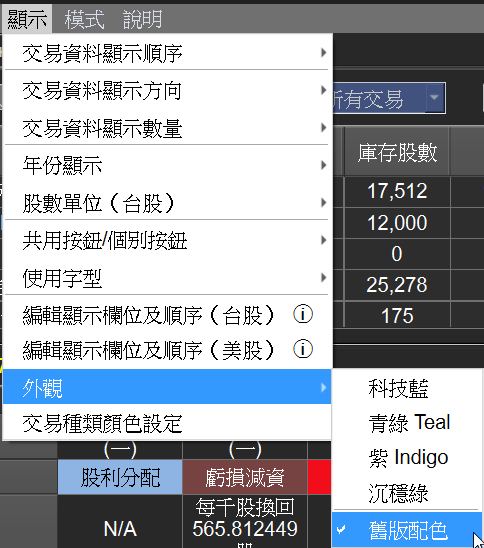
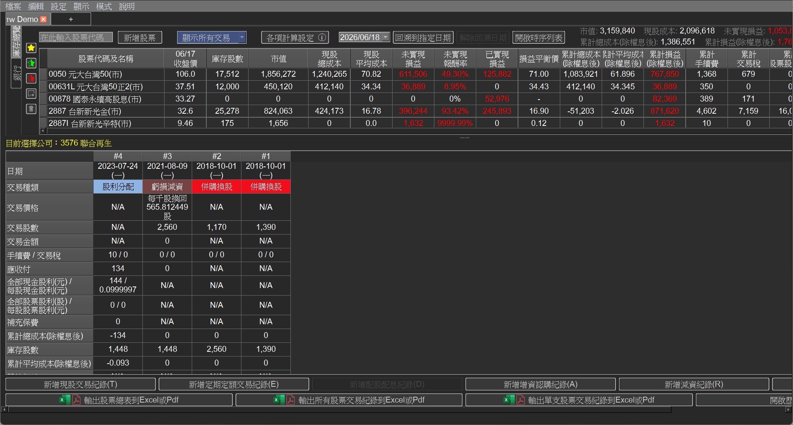
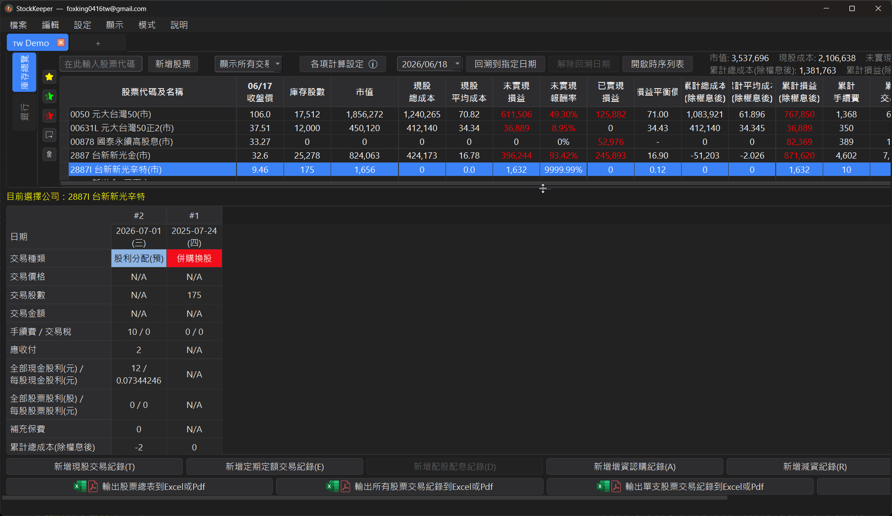
各項交易（買進 / 賣出 / 股利等）的代表顏色也可以自訂，符合個人習慣。
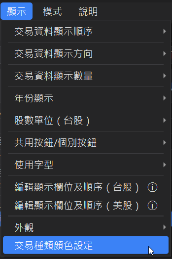
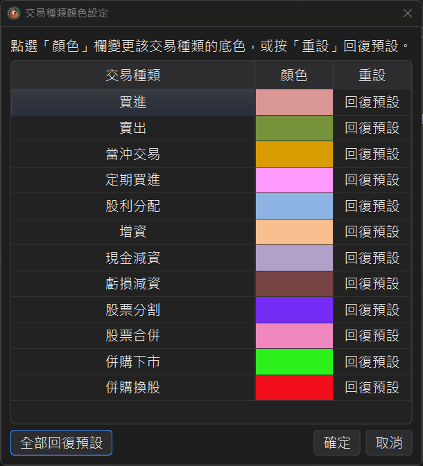
4、交易欄位雙擊即可進入編輯視窗
過去要編輯交易紀錄，必須點到 Edit 欄位才能開啟編輯視窗。 現在直接雙擊任一交易欄位就會進入編輯，省一個動作。
修正與優化
零碎股交易與預扣稅設定
1、現股交易支援小數股數
新增交易時的交易數量欄位現在可以輸入 小數股數。
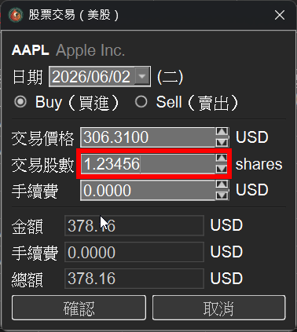
2、美股股利可預扣 30% NRA 稅
台灣與美國沒有租稅協定,非居民(NRA)收到的美股股利 會被預扣 30% 的稅。 在各項計算設定中勾選此選項後, 該帳戶自動帶入的股利就會自動預扣 30%, 不須逐筆手動輸入。
部分標的(例如某些 ETF 的境外來源配息)可豁免預扣, 可在下方清單手動加入排除的股票, 這些股票的股利就不會被預扣 30%。
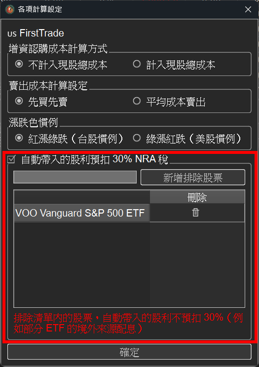
台股 + 美股雙市場記帳正式上線
v3.2.0 是 StockKeeper 的一個重要里程碑 ── 從原本只支援台股，正式擴充到 台股 + 美股雙市場記帳。 兩種市場各自獨立帳戶、互不干擾， 並針對美股的交易慣例做了完整調整。
1、新增美股帳戶，台美各自獨立
新增帳戶時可選擇「台股 / 美股」市場， 帳戶分頁會以前綴區分（🇹🇼 TW / 🇺🇸 US），一眼分辨。 市場選定後即不可切換，避免資料混淆。

美股帳戶預設採用美股慣例：綠漲紅跌； 台股則維持紅漲綠跌， 兩者都可以依帳戶獨立自訂漲跌顏色。


2、自動隱藏美股不適用的欄位與功能
美股沒有的概念會自動隱藏，介面更乾淨，包含：
● 交易稅、 二代健保補充保費、 股票股利、 減資、 損益平衡價 等欄位 / 功能。
● 手續費可不填 ── 多數美股券商為 $0 佣金。
3、美股一樣支援券商對帳單匯入（Excel / CSV）
美股帳戶同樣可以匯入券商對帳單，自由對應欄位 （日期 / 種類 / 代號 / 數量 / 單價 / 手續費）。
支援的交易種類：買進、 賣出、 定期定額買進； 其他類型（股息 / 利息 / 提款等）會自動略過。

4、美股股價自動更新
程式啟動後會自動取得全市場最新收盤價， 涵蓋 NYSE / NASDAQ / AMEX 及 ETF， 合計逾 1 萬檔。 每個交易日美股收盤後自動更新， 庫存總表隨時顯示最新市值與損益。

5、美股的分割與股利自動帶入（雲端模式）
在雲端模式下，美股的分割與 股利會自動帶入，與台股一樣省心。 由於美股相關資料量過於龐大、無法即時讓使用者自行爬蟲， 單機模式不支援美股的自動帶入， 這部分需透過雲端模式取得。

修正與優化
進階功能與匯入彈性大升級
v3.1.0 的主軸是使用彈性與進階分析。新增的雲端模式（本機儲存）讓使用者可以登入帳號使用進階統計功能，卻把交易資料留在自己電腦裡；走勢圖框選日期與時序列表新欄位讓區間績效檢視更直覺；Excel 對帳單匯入也擴充支援 xls 與 csv 格式。
1、新增雲端模式（本機儲存）
啟動程式時的啟動模式選擇視窗新增第三個選項 ── 雲端模式（本機儲存）。 這個模式讓使用者可以登入帳號使用進階統計功能， 但交易資料仍保存在本機電腦， 不會上傳到雲端資料庫。 適合在意資料隱私、又想使用雲端版進階功能的使用者。

2、Excel 對帳單匯入支援 xls 與 csv 格式
過去匯入對帳單只支援 xlsx 格式，本次擴充新增 xls 與 csv 兩種格式，讓更多券商下載下來的對帳單可以直接匯入。
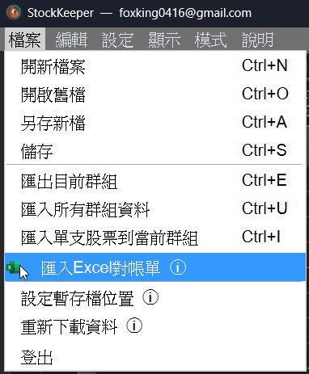
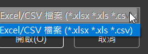
3、走勢圖可框選日期區間，直接開啟時序列表
在帳戶持股走勢圖上，現在可以用滑鼠框選一段日期區間， 程式會以該區間直接開啟時序列表，立即看到這段期間的所有交易與 TWR / XIRR 報酬率。 過去要「先看圖、再切回去手動輸入日期區間到時序列表」的兩段操作，現在一個框選動作就完成。
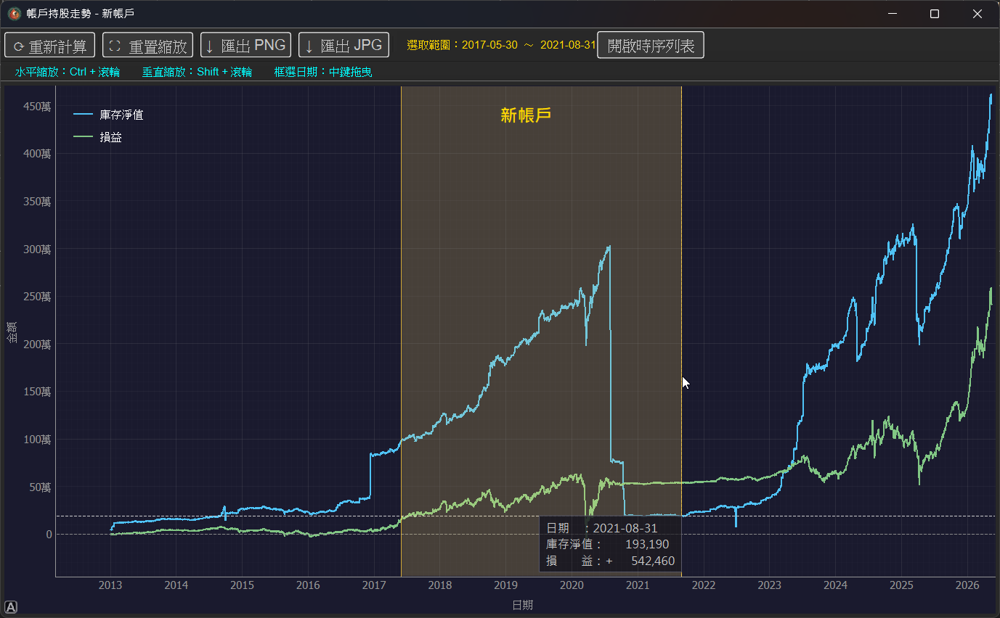
4、時序列表新增「區間獲利」與「應收付」欄位
時序列表新增兩個欄位：
● 區間獲利：該段期間的實際損益金額，直接看到區間內賺了多少元，不必另外換算。
● 應收付：把該區間內所有交易的應收應付加總，一眼看出區間內的資金實際進出。
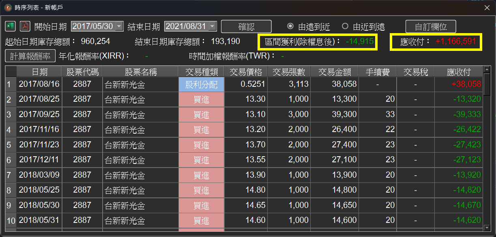
修正與優化
雲端模式上線 & 三大新功能
v3.0.0 是 StockKeeper 推出以來最大幅度的一次更新，主軸是雲端模式正式上線，並新增三項長期被使用者敲碗的功能：庫存損益走勢圖表、歷史回溯、時序列表（含 TWR / XIRR）。另外也修復了多個老問題，使用體驗更穩定。
1、雲端模式正式上線
過去 StockKeeper 只能在單機環境使用，本次更新加入雲端模式，支援以 Google 帳號一鍵登入，首次使用時可自動將原本的單機檔案匯入雲端，無痛轉移。 雲端版本的操作體驗與單機版幾乎一致（僅鎖定復原 / 取消復原功能）， 資料隨時可下載備份，不會被雲端版綁住。
2、新功能：庫存損益走勢圖表
許多人看著庫存淨值不斷增加，卻分不清楚到底是本金投入變多，還是真的有賺到錢。 新增的庫存損益走勢圖表會把庫存淨值與累計損益畫在同一張圖上，讓你一眼就看出兩者的差距與趨勢，並支援水平 / 垂直自由縮放，以及匯出 PNG / JPG留存。
3、新功能：歷史回溯
想知道某一年的某一天，自己當時持有哪些股票、損益是多少嗎？ 新版只要選定一個回溯日期，主畫面就會立即呈現該日的實際持股明細、收盤價、未實現損益、已實現損益等完整狀態，回溯期間可隨時解除回溯回到當前。
4、新功能：時序列表（TWR / XIRR）
新增時序列表，可自訂開始日期與結束日期，列出該區間內所有交易明細，並自動計算這段期間的時間加權報酬率（TWR）與年化報酬率（XIRR）。 這對於檢視某一年、某一季，或特定投資策略期間的真實績效非常有幫助。
修正與優化
功能補強 & 易用性提升
本次 v2.8.0 更新主要回應使用者回饋，針對 交易彈性、UI 易用性 與 計算正確性 進行補強與優化。
1、手續費折扣方式新增『事後退佣』
劵商交易手續費折扣有兩種方式：立即折扣與事後退佣。雖然折扣方式不影響實際累計損益的數值，但會影響『#現股總成本』跟『#未實現損益』所呈現的數字。 StockKeeper 之前只有提供立即折扣的計算模式，此次更新讓使用者可以自行決定要選擇哪種模式。
2、增資認購成本計算方式新增『計入現股總成本』
StockKeeper 之前對增資認購的交易只計入累計總成本，而未將其計入現股總成本（參考元大證劵 App 的計算方式）。但近期發現部分劵商（如華南永昌）會將增資認購的股票計入現股總成本。 此次更新讓使用者可以自行決定是否要將增資認購成本計入現股總成本。
3、未實現損益計算方式新增『不預扣手續費及交易稅』
此次更新讓使用者可以自行決定是否要在未實現損益計算中預扣手續費及交易稅。
4、賣出成本新增『平均價賣出』
台股交易一般都是以先買先賣為損益計算方式。但若是公司法人戶需要做會計帳，則在賣出時會需要以平均價作為成本。 此次更新新增此功能，讓使用者可以根據需求選擇適合的成本計算方式。
5、交易列表新增『垂直捲動』方式
過往 StockKeeper 的交易列表是水平呈現，因此無法使用滑鼠滾輪來捲動。此次更新新增了垂直捲動方式，讓使用者可以更方便地瀏覽交易列表。
交易彈性、UI 易用性與計算正確性大補強
本次 v2.7.0 更新主要回應使用者回饋，針對 交易彈性、UI 易用性 與 計算正確性 進行補強與優化。
1、分割 / 合併 / 減資紀錄設定全面開放
StockKeeper 會自動帶入股利、減資、分割、合併等資料，過去僅提供股利的控制介面。本次更新將所有相關設定全面開放 UI，讓使用者可以自行決定是否要自動帶入各類資料。
2、共用按鈕列（小螢幕更友善）
將「自動帶入股利 / 減資 / 分割合併、匯出、刪除」整合為共用按鈕並移至畫面前方。若偏好舊版配置，可從「顯示 → 使用個別按鈕」切換回原樣。
3、新增交易時保留股票列表排序
新增交易後，股票列表將保留原有排序條件，不再因刷新資料而重置排序。
4、UI 字型大小調整（大 / 中 / 小）
可依個人需求調整字型大小。
※ 切換後需重新啟動程式才會生效。
5、交易列表欄寬可調整並自動記憶
交易列表欄寬可手動拖拉調整，設定會被記憶，不需每次重新設定。
6、重新下載資料功能
當資料出現不完整時，可使用「重新下載資料」功能，從政府網站重新爬取資料。
7、匯入對帳單功能補強
新增支援僅有股票代碼或股票名稱的匯入模式。
8、當沖交易架構重整
新版將整筆買賣交易定義為一筆當沖交易，同時設定買價與賣價，可正確顯示當沖買與賣。舊有當沖紀錄可保留，或刪除後以新版方式重新建立。
9、股票右鍵快速查詢
在股票列表中按右鍵，可快速連結至 GoodInfo 或 Yahoo Finance 查詢進階資訊。
10、F1 快速開啟教學
滑鼠移至帶有 ⓘ 的功能上，按下 F1 即可開啟對應教學頁。
11、支援 0 元成本交易
允許建立成本為 0 元的交易紀錄，以因應無法回溯歷史成本的情境。
12、股價上下鍵符合實際跳動檔位
調整股價時，會依實際台股與 ETF 跳動檔位變動，而非固定 0.1 元。
13、新增交易時預設帶入目前股價
新增交易紀錄時，預設填入目前股價作為交易價格。